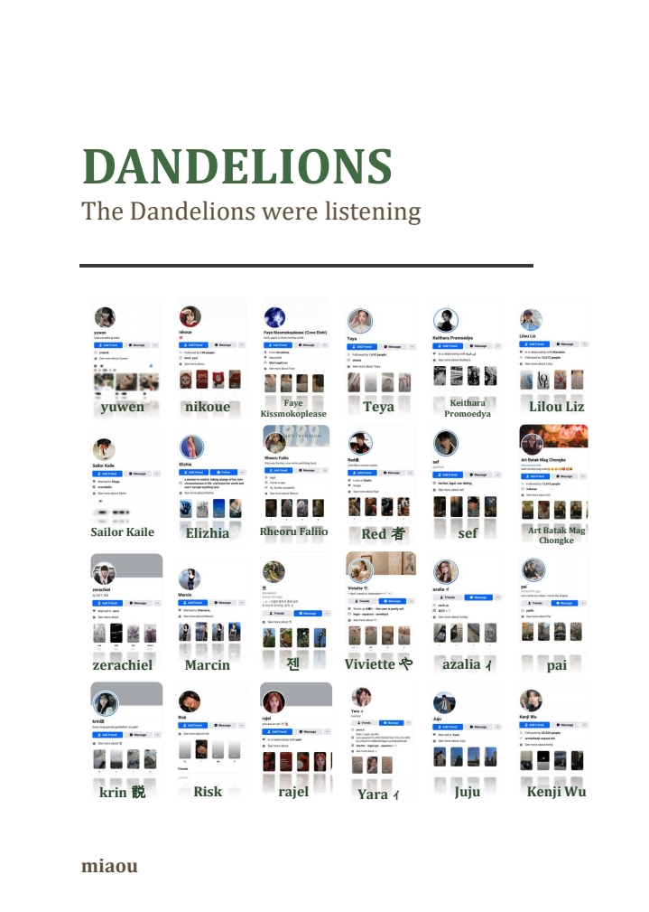
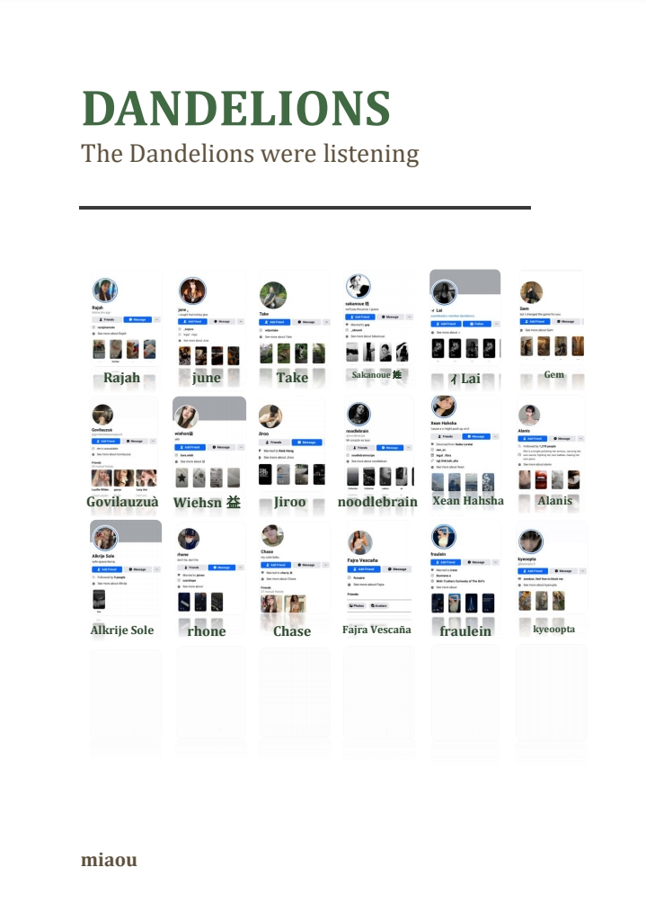

Be a dandelion in a world of roses Inspire wishes in kisses of stolen breath Complete your phase in celestial dreams Of the Sun moon and stars While setting your roots deep In the warm earth amidst blades of humble grass. - teaganell